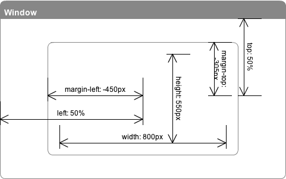
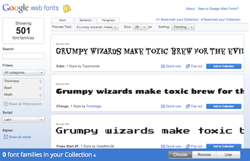

Advanced HTML page authoring using modern CSS features
Who are we?
Speakers
Eiji Kitamura
Eiji is a Developer Advocate for Chrome at Google works closely with web application developers. Before joining Google, he has been specialized in SocialWeb technologies.
Alex Danilo
Alex is a Chrome Developer Advocate. He has been actively involved with web standards and development for many years. His passion is the Open Web.
Locate slides to the center using absolute positioning technique
Distributing visible slides using CSS 2d transform
Enabling animation effect using CSS transition
Locating slides to the center

Exercise: Learning HTML5 slide layout
Step 1: Locating slides to the center
Distributing visible slides using CSS 2d transform
Using "transform: translate", you can distribute slides.
transform: translateX(10px); // horizontally move DOM
transform: translateY(20px); // vertically move DOM
transform: translate(10px, 20px); // set X and Y at once
CSS 2d transform
Enabling animated motion effect using CSS transition
By using "transition", you can animate slides on transition.
transition-property: margin; // name of property to animate
transition-duration: 0.3s; // duration of the animation to finish
transition-timing-function: ease-out; // how the animation flow over time
transition-delay: // delay to start the animation
CSS transition
Exercise: Learning HTML5 slide layout
Step 2: Distributing visible slides using CSS 2d transform
Step 3: Enabling animated motion effect using CSS transition
Lesson 2: Designing Slides
Reviewing basic CSS features
Effectively change taste of a page by using WebFonts
Enrich texture of background by adding CSS gradients
WebFonts
WebFonts brings fonts that are not installed onto your system.

CSS gradients
Gradients can be applied to any values that accept images.